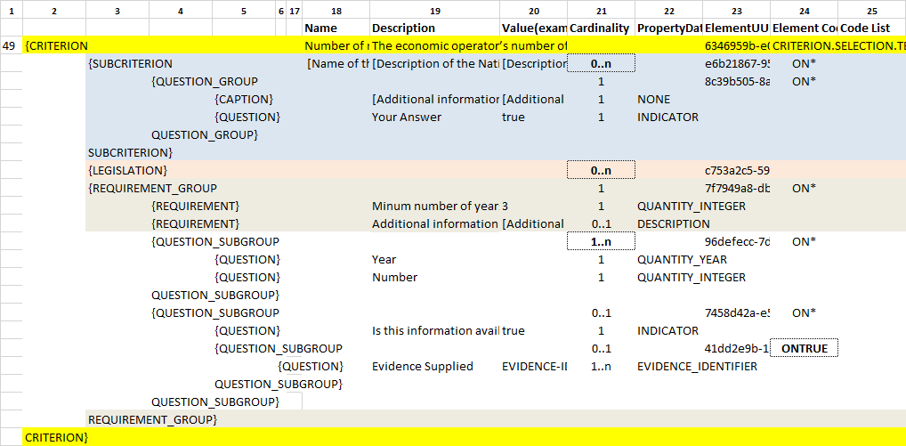

VI.9.8 Self-contained Abilities (V) - Staff
Data Structure - Self-contained (Staff)
(The figure below is defined in the the tab ''SC_Abilities_5 (Staff)'' of the ESPD-CriteriaTaxonomy spread-sheet).

Figure 1. Self-contained 'Abilities (V) (Staff)' criterion data structure
XML Example - Self-contained
Criterion SC-Abilities (Staff) Self-contained ESPD-Request
<!-- Header elements removed for brevity. -->
<!--
This criterion illustrates how to prepare a selection criterion about ''abilities'', more specifically the criterion
''Number of managerial staff''.
-->
<!-- The rest of criteria above and below this criterion have been removed for brevity. -->
<cac:TenderingCriterion>
<cbc:ID schemeID="CriteriaTaxonomy" schemeAgencyID="EU-COM-GROW" schemeVersionID="2.1.0">6346959b-e097-4ea1-89cd-d1b4c131ea4d</cbc:ID>
<cbc:CriterionTypeCode listID="CriteriaTypeCode" listAgencyID="EU-COM-GROW" listVersionID="2.1.0">CRITERION.SELECTION.TECHNICAL_PROFESSIONAL_ABILITY.MANAGEMENT.MANAGERIAL_STAFF</cbc:CriterionTypeCode>
<cbc:Name>Number of managerial staff</cbc:Name>
<cbc:Description>The economic operator’s number of managerial staff for the last three years were as follows:</cbc:Description>
<cac:Legislation><!-- Data elements removed for brevity. --></cac:Legislation>
<!-- This criterion will not be weigthed. -->
<!-- The main group of REQUIREMENTs and QUESTIONs starts here. -->
<cac:TenderingCriterionPropertyGroup>(1)(2)
<cbc:ID schemeAgencyID="EU-COM-GROW" schemeVersionID="2.1.0">7f7949a8-dbe6-496c-a9f6-6f05b8648bad</cbc:ID>
<cbc:PropertyGroupTypeCode listID="PropertyGroupType" listAgencyID="EU-COM-GROW" listVersionID="2.1.0">ON*</cbc:PropertyGroupTypeCode>
<!-- Two REQUIREMENTs are issued, minimum number of years and additional information. Beware that in the ESP all the thresholds imposed
with a REQUIREMENT are at present *minimum* quantities. -->
<!--
REQUIREMENT #1: Minimum number of times (3) for which the economic must provide the number
of managerial staff, three times in this example. -->
<cac:TenderingCriterionProperty>(3)(4)
<cbc:ID schemeID="CriteriaTaxonomy" schemeAgencyID="EU-COM-GROW" schemeVersionID="2.1.0">2416716f-1d55-4a5a-8580-f8b5a33ca2c9</cbc:ID>
<cbc:Description>Minum number of years</cbc:Description>
<cbc:TypeCode listID="CriterionElementType" listAgencyID="EU-COM-GROW" listVersionID="2.1.0">REQUIREMENT</cbc:TypeCode>
<cbc:ValueDataTypeCode listID="ResponseDataType" listAgencyID="EU-COM-GROW" listVersionID="2.1.0">QUANTITY_INTEGER</cbc:ValueDataTypeCode>
<!-- The number provided by the contracting authority. -->
<cbc:ExpectedValueNumeric>3</cbc:ExpectedValueNumeric>
</cac:TenderingCriterionProperty>
<!-- Additional information in a narrative way. -->
<cac:TenderingCriterionProperty>(5)
<cbc:ID schemeID="CriteriaTaxonomy" schemeAgencyID="EU-COM-GROW" schemeVersionID="2.1.0">da6558a0-0878-4662-99fd-a7040b139e02</cbc:ID>
<cbc:Description>Additional information</cbc:Description>
<cbc:TypeCode listID="CriterionElementType" listAgencyID="EU-COM-GROW" listVersionID="2.1.0">REQUIREMENT</cbc:TypeCode>
<cbc:ValueDataTypeCode listID="ResponseDataType" listAgencyID="EU-COM-GROW" listVersionID="2.1.0">DESCRIPTION</cbc:ValueDataTypeCode>
<cbc:ExpectedDescription>Provide a sufficient description of the managerial team.</cbc:ExpectedDescription>
</cac:TenderingCriterionProperty>
<!-- Subgroup 1/3 (for year 1 out of 3). -->
<cac:SubsidiaryTenderingCriterionPropertyGroup>(6)
<cbc:ID schemeAgencyID="EU-COM-GROW" schemeVersionID="2.1.0">96defecc-7d32-4957-82e9-aad5f3c5b736</cbc:ID>
<cbc:PropertyGroupTypeCode listID="PropertyGroupType" listAgencyID="EU-COM-GROW" listVersionID="2.1.0">ON*</cbc:PropertyGroupTypeCode>
<!-- QUESTION asking the first year. -->
<cac:TenderingCriterionProperty>(7)
<cbc:ID schemeID="CriteriaTaxonomy" schemeAgencyID="EU-COM-GROW" schemeVersionID="2.1.0">bd677a81-a394-44de-b7d2-8bf3be5991d8</cbc:ID>
<cbc:Description>Year</cbc:Description>
<cbc:TypeCode listID="CriterionElementType" listAgencyID="EU-COM-GROW" listVersionID="2.1.0">QUESTION</cbc:TypeCode>
<cbc:ValueDataTypeCode listID="ResponseDataType" listAgencyID="EU-COM-GROW" listVersionID="2.1.0">QUANTITY_YEAR</cbc:ValueDataTypeCode>
</cac:TenderingCriterionProperty>
<!-- QUESTION asking the number of the staff for the first year, e.g. the EO would respond with a value like: 12 (meaning a team of twelve people). -->
<cac:TenderingCriterionProperty>(8)
<cbc:ID schemeID="CriteriaTaxonomy" schemeAgencyID="EU-COM-GROW" schemeVersionID="2.1.0">102375b8-881f-4bac-85d7-15f78e7a7895</cbc:ID>
<cbc:Description>Number</cbc:Description>
<cbc:TypeCode listID="CriterionElementType" listAgencyID="EU-COM-GROW" listVersionID="2.1.0">QUESTION</cbc:TypeCode>
<cbc:ValueDataTypeCode listID="ResponseDataType" listAgencyID="EU-COM-GROW" listVersionID="2.1.0">QUANTITY_INTEGER</cbc:ValueDataTypeCode>
</cac:TenderingCriterionProperty>
</cac:SubsidiaryTenderingCriterionPropertyGroup>
<!-- Placeholder for evidences related to the first year. -->
<cac:SubsidiaryTenderingCriterionPropertyGroup>(9)
<!-- Data elements removed for brevity. -->
</cac:SubsidiaryTenderingCriterionPropertyGroup>
<!-- Subgroup 2/3 (for year 2 out of 3) -->
<cac:SubsidiaryTenderingCriterionPropertyGroup>(10)
<cbc:ID schemeAgencyID="EU-COM-GROW" schemeVersionID="2.1.0">96defecc-7d32-4957-82e9-aad5f3c5b736</cbc:ID>
<cbc:PropertyGroupTypeCode listID="PropertyGroupType" listAgencyID="EU-COM-GROW" listVersionID="2.1.0">ON*</cbc:PropertyGroupTypeCode>
<!-- QUESTION asking the second year -->
<cac:TenderingCriterionProperty>
<cbc:ID schemeID="CriteriaTaxonomy" schemeAgencyID="EU-COM-GROW" schemeVersionID="2.1.0">0dcb85d0-9c7a-4dc3-b966-48dd8d00a4e4</cbc:ID>
<cbc:Description>Year</cbc:Description>
<cbc:TypeCode listID="CriterionElementType" listAgencyID="EU-COM-GROW" listVersionID="2.1.0">QUESTION</cbc:TypeCode>
<cbc:ValueDataTypeCode listID="ResponseDataType" listAgencyID="EU-COM-GROW" listVersionID="2.1.0">QUANTITY_YEAR</cbc:ValueDataTypeCode>
</cac:TenderingCriterionProperty>
<!-- QUESTION asking the number of the staff for the second year. -->
<cac:TenderingCriterionProperty>
<cbc:ID schemeID="CriteriaTaxonomy" schemeAgencyID="EU-COM-GROW" schemeVersionID="2.1.0">3995be99-c599-4049-a8e4-78d96a787fb1</cbc:ID>
<cbc:Description>Number</cbc:Description>
<cbc:TypeCode listID="CriterionElementType" listAgencyID="EU-COM-GROW" listVersionID="2.1.0">QUESTION</cbc:TypeCode>
<cbc:ValueDataTypeCode listID="ResponseDataType" listAgencyID="EU-COM-GROW" listVersionID="2.1.0">QUANTITY_INTEGER</cbc:ValueDataTypeCode>
</cac:TenderingCriterionProperty>
</cac:SubsidiaryTenderingCriterionPropertyGroup>
<!-- Placeholder for evidences related to the second year. -->
<cac:SubsidiaryTenderingCriterionPropertyGroup>
<!-- Data elements removed for brevity. -->
</cac:SubsidiaryTenderingCriterionPropertyGroup>
</cac:SubsidiaryTenderingCriterionPropertyGroup>
<!-- Subgroup 3/3 (for year 3 out of 3) -->
<cac:SubsidiaryTenderingCriterionPropertyGroup>(11)
<cbc:ID schemeAgencyID="EU-COM-GROW" schemeVersionID="2.1.0">96defecc-7d32-4957-82e9-aad5f3c5b736</cbc:ID>
<cbc:PropertyGroupTypeCode listID="PropertyGroupType" listAgencyID="EU-COM-GROW" listVersionID="2.1.0">ON*</cbc:PropertyGroupTypeCode>
<!-- QUESTION asking the third year -->
<cac:TenderingCriterionProperty>
<cbc:ID schemeID="CriteriaTaxonomy" schemeAgencyID="EU-COM-GROW" schemeVersionID="2.1.0">783bb2c3-b354-45e4-a75e-0547393ce05a</cbc:ID>
<cbc:Description>Year</cbc:Description>
<cbc:TypeCode listID="CriterionElementType" listAgencyID="EU-COM-GROW" listVersionID="2.1.0">QUESTION</cbc:TypeCode>
<cbc:ValueDataTypeCode listID="ResponseDataType" listAgencyID="EU-COM-GROW" listVersionID="2.1.0">QUANTITY_YEAR</cbc:ValueDataTypeCode>
</cac:TenderingCriterionProperty>
<!-- QUESTION asking the number of the staff for the third year. -->
<cac:TenderingCriterionProperty>
<cbc:ID schemeID="CriteriaTaxonomy" schemeAgencyID="EU-COM-GROW" schemeVersionID="2.1.0">d9cd4ee1-c0f1-441a-8057-07ecba179266</cbc:ID>
<cbc:Description>Number</cbc:Description>
<cbc:TypeCode listID="CriterionElementType" listAgencyID="EU-COM-GROW" listVersionID="2.1.0">QUESTION</cbc:TypeCode>
<cbc:ValueDataTypeCode listID="ResponseDataType" listAgencyID="EU-COM-GROW" listVersionID="2.1.0">QUANTITY_INTEGER</cbc:ValueDataTypeCode>
</cac:TenderingCriterionProperty>
</cac:SubsidiaryTenderingCriterionPropertyGroup>
<!-- Placeholder for evidences related to the third year. -->
<cac:SubsidiaryTenderingCriterionPropertyGroup>
<!-- Data elements removed for brevity. -->
</cac:SubsidiaryTenderingCriterionPropertyGroup>
</cac:TenderingCriterionPropertyGroup>
</cac:TenderingCriterion>
<!-- Rest of elements until the end of the Request documentn removed for brevity. -->| 1 | Notice that this criterion does not specify any weight. The default evaluation method is PASS_FAIL. Most probably this is an Open Procurement Procedure. |
| 2 | The main group of REQUIREMENTs and QUESTIONs starts here. |
| 3 | Two REQUIREMENTs are issued, minimum number of years and additional information. Beware that in the ESP all the thresholds imposed with a REQUIREMENT are at present minimum quantities. |
| 4 | REQUIREMENT #1: Minimum number of times (3) for which the economic must provide the number of managerial staff, three times in this example. |
| 5 | Additional information in a narrative way. |
| 6 | Subgroup 1/3 (for year 1 out of 3). |
| 7 | QUESTION asking the first year, e.g. the EO, in its response would provide an integer value like: 2016. |
| 8 | QUESTION asking the number of the staff for the first year, e.g. the EO would respond with a value like: 12 (meaning a team of twelve people). |
| 9 | Subgroup for evidences related to this first REQUIREMENT. The data elements inhere have been removed for the sake of brevity. See XML examples in dist/xml for the complete Criterion. |
| 10 | Subgroup 2 or REQUIREMENTs and QUESTIONs. |
| 11 | Subgroup 3 or REQUIREMENTs and QUESTIONs. |